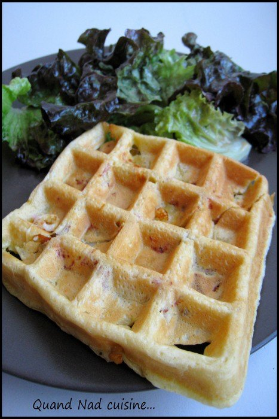

Gaufres salées
Ingredients
×
- 6 tomates séchées
- 125 g de mozzarella
- chorizo ou bacon
- 4 oeufs
- 175 g de farine
- 50 g de beurre fondu
- 15 cl de lait
- sel
- poivre
- origan
- basilic
- piment d'Espelette

Préparation
Étape 1
Couper en petits dés 6 tomates séchées, 125 g de mozzarella égouttée et du chorizo ou bacon.
Étape 2
Battre 4 oeufs, ajouter 175 g de farine et 50 g de beurre fondu, puis délayer avec 15 cl de lait. Ajouter du sel et du poivre.
Étape 3
Ajouter la garniture, de l’origan, du basilic et du piment d'Espelette.
Étape 4
Cuire dans le gaufrier chaud légèrement huilé, jusqu’à ce que les gaufres soient bien dorées.